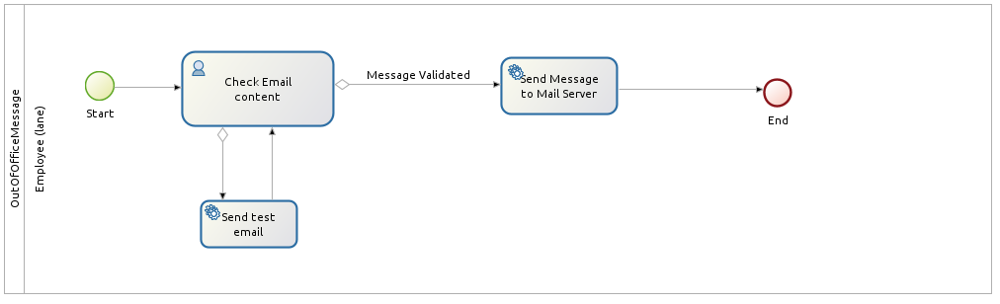
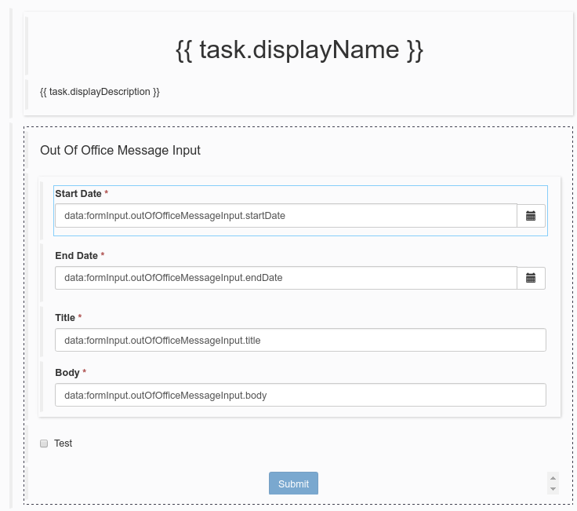
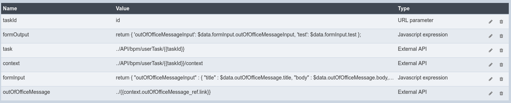

How to use the rich textarea widget in a mail template
Learn how to use a mail template in a form with the rich textarea widget: the leave request management process example.
Out of office message process
Usually, when leaving for a vacation, you set your mail account up with an out of office message to notify your senders that you are not here until a specific date.
You will design a process using Bonita: + First, draw the wireframe of the process in Bonita Studio. + The process consists of a :
-
a start event
-
a human task asking for the user to check the email content which will be send, the dates of its vacation and whether it wants to test the mail before submitting it to the mail server.
-
a service task sending the mail to the user
-
a service task which sends the out of office mail message to the mail server
-
an end event
The process will look like this:

Conditions are set on the transition out of the Check Email content task allowing to know which path to use.
We create a Business Data Model to hold the user informations :
-
startDate: leave date start as a DATE
-
endDate: leave date end as a DATE
-
title: the mail title as a STRING
-
body: the mail body as a STRING with a length of 2048

A business object variable will be created at pool level, named outOfOfficeMessage. It will to be initialized via a Groovy script with the mail template of the out of office message. + The template will be filled with the initiator information and its manager contact:
import org.bonitasoft.engine.identity.ContactData;
import org.bonitasoft.engine.identity.User;
def ooom = new com.company.model.OutOfOfficeMessage();
User u = BonitaUsers.getProcessInstanceInitiator(apiAccessor,processInstanceId);
User manager = BonitaUsers.getProcessInstanceInitiatorManager(apiAccessor,processInstanceId);
ContactData managerData = BonitaUsers.getProcessInstanceInitiatorManagerProfessionalContactInfo(apiAccessor,processInstanceId);
ContactData userData = BonitaUsers.getProcessInstanceInitiatorProfessionalContactInfo(apiAccessor,processInstanceId)
ooom.setTitle("Out of office");
ooom.setBody("""
<p>Hi,<br>
<br>
I'm currently out of office until the ... of .... YYYY with very limited email access.<br>
<br>
For any questions feel free to contact <a href="mailto:${managerData.email}">${manager.firstName} ${manager.lastName}</a>.<br>
<br>
Best Regards<br>
${u.firstName} ${u.lastName}
</p>
<div dir="ltr">
// ...
// Mail signature
// ...
</div>
""");
ooom.setStartDate(new Date());
ooom.setEndDate(new Date());
return ooom;This process instantiation do not hold any form (no form in the tab) and a business object will be created with a groovy script setting the mail template.
Check email content task
The Check email content human task will consists of a contract matching the Business object outOfOfficeMessage for it to be mapped with the contract output. We also will need a local variable which will allows to know if the mail needs to be tested. + This variable needs to be mapped with a contract data too.
The contract will looks like this :

And the operation pane will look like this:

Send test email service task
This task allow to send a test email to the process instance initiator for him to check if the mail renderring is correct.
Therefore, we will use the EMAIL (SMTP) Connector on the task out step. + The connector properties will be :
-
The to and from properties of the connector will use groovy script to retrieve the appropriate address:
BonitaUsers.getProcessInstanceInitiatorProfessionalContactInfo(apiAccessor,processInstanceId).email; -
The Subject will use a groovy script too to retrieve the business variable property:
outOfOfficeMessage.title -
The Message will use a groovy script too to retrieve the business variable property:
outOfOfficeMessage.bodyOnce this task is completed, a new Check email content human task is available.o
Send message to mail server
Here, the out of office mail message has been validated and the way the mail server handle the out of office mail configuration for a given user depends on the mail server provider and will not be detailed here. + It will use a connector that will send the appropriate information via an external API.
Form for 'Check Email content' task
On 'Check Email content' task, in the pane, use the pencil :fa-pencil: icon to generate a default form from the contract. + It will look like this:

For a better usability, we can :
-
rename Start Date to Start
-
rename End Date to End
-
have both date widget on the same line
-
change the checkbox Test to a select box :
-
add a select widget below the checkbox
-
create a nextStepChoice JSON variable defining the different choices :
[ {"name": "Receive a test email in my mailbox", "value": true}, {"name": "Send mail message to mail server", "value": false} ] -
set the following properties to the select widget:
-
Label hidden to
true -
Available values to
nextStepChoices -
Displayed key to
name -
Returned key to
value -
Value to
formInput.testIt will look like this:
-

-
We need to retrieve the business object outOfOfficeMessage which contains the mail contents.
+ We use an External API variable named outOfOfficeMessage which uses the context variable business object reference link: ../{{context.outOfOfficeMessage_ref.link}}
We bind the attributes of outOfOfficeMessage to fill the formInput variable that is already bound to inputs. + Change the formInput type to Javascript Expression and set the value to:
return {
"outOfOfficeMessageInput" : {
"title" : $data.outOfOfficeMessage.title,
"body" : $data.outOfOfficeMessage.body,
"startDate" : $data.outOfOfficeMessage.startDate,
"endDate" : $data.outOfOfficeMessage.endDate
},
"test" : false
};The variable pane will look like this:

We will take advantage of the Rich text area widget to have a nice way to visualize the mail body.
Add a Rich text area widget below the title input widget:
-
set the value to
formInput.outOfOfficeMessageInput.body(the same as the body input widget) -
set the Label property to
Body -
set the Required property to
yes -
set the Style toolbar property to
p, ul, ol -
set the Miscellaneous toolbar property to
html, insertImage, insertLink, undo, redo, clear
Click on preview. And the form will look like: